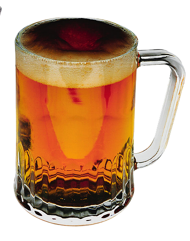
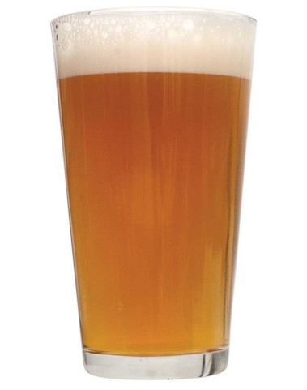
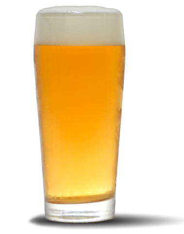
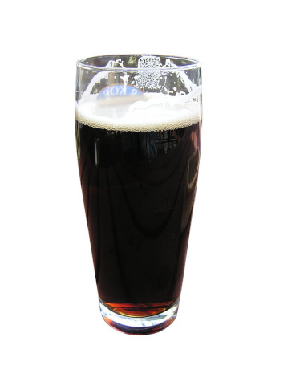
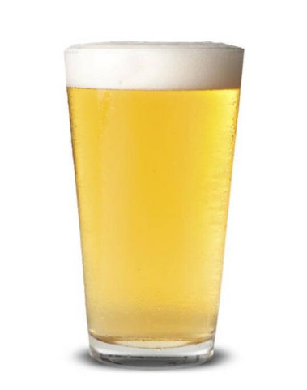
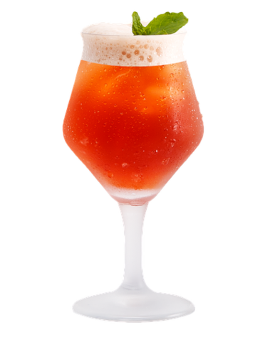
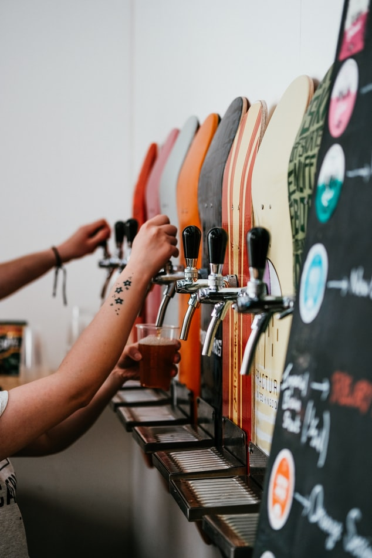
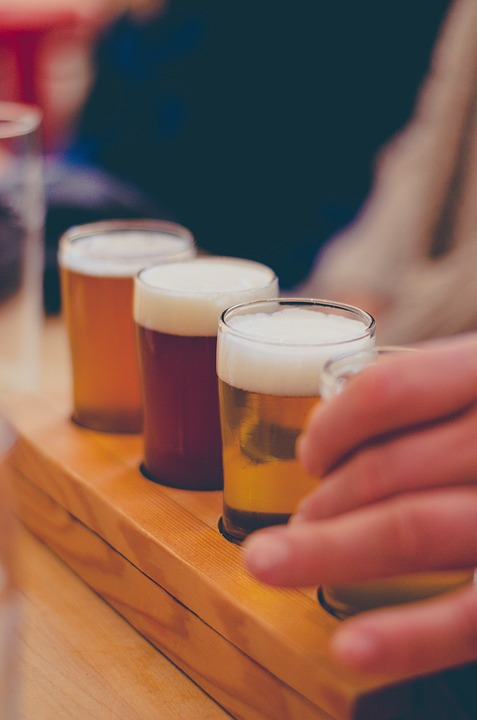

CRafty ALes

Welcome to our small Yorkshire Brewing company, where we fill each pint with honest hops and some northern soul.
Fairytale of York
ABV 6%
Chuffin' Pale Ale
ABV 5.5%
Emley IPA
ABV: 5.5%
Stout wi' Clout
ABV 6.8%
Bronte Blondë
ABV: 4.7%.
The Scarborough Sour
ABV: 7%.
Our Brewery
Our Brewery is located in the picturesque village of Malham, nestled in the Yorkshire Dales. We offer tasting tours and a chance to see the production of some of our best-selling beers! Malham Cove is right on our doorstep - what better way to finish off a hike than by sampling some of our delicious ales.

